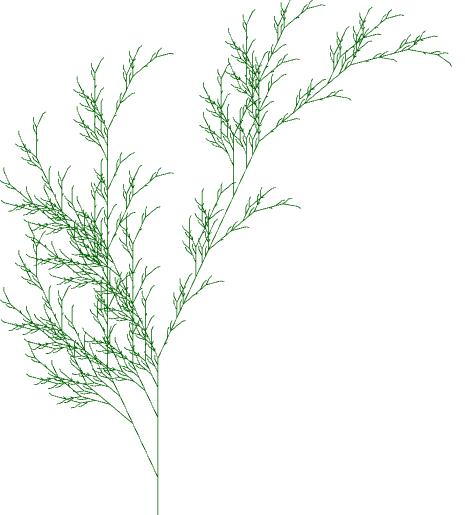

An L-System is a mathematical object which uses simple rules to generate complex organic shapes, like this fern:
In this article, we will describe the inner-workings of L-Systems and explore the elegant patterns they give rise to. Then we will dive deeper into the theoretical importance of systems that bear close resemblance to L-Systems.
An L-System consist of two main components: the axiom and the rules. The axiom describes the initial state of the system. You can think of it like a seed; it describes what the plant looks like before it begins to develop. The axiom will always be a single symbol. For example, Axiom = A
The rules, on the other hand, describe how the system grows and changes over time. Building on the plant analogy, you can think of the rules as the plant's DNA. Each rule will tell us how to substitute one symbol for another string of one or more symobls. Here is an example of a rule: Rule = A ↦ AB This rule means that whenever we see they symbol A, we need to substitute it with the string AB.
To "grow" the L-System, we start by applying the rules to the axiom. This means we look at the axiom and wherever we see a symbol which occurs on the left side of a rule, we replace it with the string on the right side of that rule. In our example we have an A in our axiom and our rule has an A on the left side, so we replace A with AB. Then all we do is repeat. We take our newly formed string AB and apply the rules again. Once again we substitute A with AB and leave the B alone (since we have no rule telling us to do something with B) leaving us with the string ABB. We can repeat this process for as many iterations as we want. In this case our L-System yields the strings ABBB... with the number of B's equal to the number of iterations.
Let's look at another example. INSERT DRAGON EXAMPLE HERE
At this point, you might be wondering how this process of generating strings of symbols like "ABB" has anything to do with generating elegant shapes like the fern.
The string that we generated in the example above doesn't appear particularly interesting or complex to the eye as it is -- it just looks like a mess.
Luckily, there is a way to give this messy string a visual interpretation which reveals its complex structure. In fact, there are many ways of visualizing a string but here is one of them: we will imagine that our string is a set of instructions for a robot illustrator. We will associate each symbol in the string with an instruction to our robot. For example, let's say that F means "draw forward." And let's say that + means turn left 90 degrees. Now to transform our string into a picture, we simply give it to the robot, who reads it symbol by symbol, following the instructions one at a time. (Those who are familiar with the turtle module in Python might find this method of drawing familiar). When we do this with the string we generated above, this beautiful picture emerges:
Here is an interactive example (if you're curious how I created it, click here) where you can create your own L-System by inputting an axiom and a set of rules. The resulting image will automatically be drawn according to the visual interpretations of each symbol as shown in the table. You can click on the presets to autofill the inputs with some famous examples of L-Systems.
| Symbol | Visual Meaning |
|---|---|
| F | draw forward |
| G | draw forward |
| f | move forward |
| g | move forward |
| L | turn left 90° |
| R | turn right 90° |
| l | turn left 25° |
| r | turn right 25° |
| [ | save position (push) |
| ] | restore position (pop) |